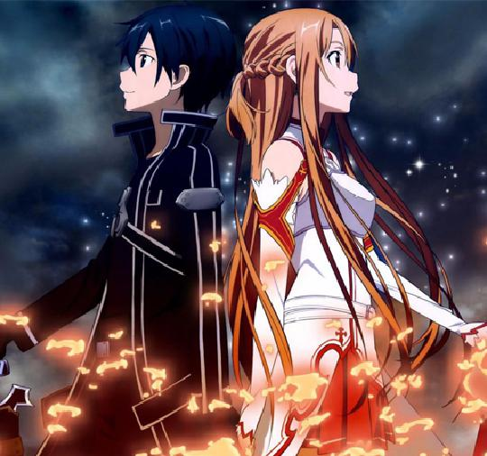

“ 这虽然是游戏，但可不是闹着玩的。
これは、ゲームであっても遊びではない ”
——“SAO刀剑神域”设计者茅场晶彦
2022年5月，大厂牌电子机械制造商ARGUS发布了能够实现虚拟现实VR的机器NerveGear，人们可以通过NerveGear进行完全潜行以进入虚拟世界。
不久，全球首款虚拟现实VR大型多人线上角色扮演游戏MMORPG《刀剑神域》在经过大约一千人参加的封闭测试Beta Test后正式发布，首次共限量发售一万份。《刀剑神域》于2022年11月6日下午1时正式开始营运。
艾恩葛朗特篇（アインクラッド，Aincrad）
第1部。小说版：第1、2卷、第8卷圈内事件，进击篇（プログレッシブ）、网络漫画ME01攻略者们；动画版：第1－14话（第1期）
桐人（桐谷和人）是使用NerveGear游玩VRMMORPG“Sword Art Online”的玩家之一，很幸运的参与过封闭测试Beta Test和成功买下了正式版。在正式营运当天（2022年11月6日），包括桐人在内的约一万名玩家就马上“完全潜行Full Dive”进入正式版的SAO，享受着虚拟世界的乐趣。
然而，四小时多后部分玩家们发现登出的指令消失了，认为只是系统暂时出错的桐人以及开始陷入混乱的所有玩家都被传送到起始城镇的大广场，但空中传来的不是众人等待许久的故障公告，而是自称是SAO游戏设计者“茅场晶彦”的人淡淡开始的死亡游戏说明：不能登出是游戏的正常现象，只有打倒位于“艾恩葛朗特顶楼第100层的最终头目”——达成完全攻略——才是离开这个世界唯一的方法。并且，在游戏内死去或是在强行现实世界中脱下NerveGear，玩家在现实世界中的脑部会被NerveGear所发出的高频率微波破坏而死亡。
由于恐惧的影响，最初的一个月内死亡人数就突破了约2000人，但玩家们终究习惯了这个真实存在的异世界。两年后的今日（2024年10月16日），尚有6000多名玩家存活，最前线已推进到第74层，桐人在第74层中，在队友撑住10秒钟后，使出了二刀流，并打倒了头目——青光眼。在第75层中，桐人发现血盟骑士团的团长——“希兹克利夫”就是最终头目“茅场晶彦”……
进击篇（プログレッシブ，Progressive）
第1部前传。小说版：《刀剑神域进击篇》全系列；动画版：第2话（第1期）、剧场版《刀剑神域剧场版 -进击篇- 无星之夜的咏叹调》
死亡游戏SAO开始后的一个月（2022年12月2日），第一层还没有被攻略，而死亡人数却已高达约两千人，封测玩家与一般玩家也陷入对立。此时，自称骑士的玩家迪亚贝尔主导举行首次的头目攻略战。桐人在首次的攻略战会议中与帮忙的少女亚丝娜组成了二人组。但是迪亚贝尔因为在第一层头目攻略战中身故，为了降低一般玩家对封测玩家的仇恨，桐人将对封测玩家的恶名将仇恨集中在自己身上，并被称为“封弊者”。失去领导的攻略玩家们也因为攻略方针的不同而彻底分裂为二个派别，暗下又有“煽动PK集团”制造两集团闲的对立。桐人与亚丝娜在攻略集团当中地位微妙，在对煽动PK集团造成的攻略集团不同派别之间的暗潮汹涌居中协商而奔走的同时亦自行前往挑战攻略艾恩葛朗特。
妖精之舞篇（フェアリィ・ダンス，Fairy Dance）
第2部。小说版：第3、4卷；动画版：第15－25话（第1期）
经过桐人（桐谷和人）和希兹克利夫在艾恩葛朗特75层的死斗后，包括桐人在内的约六千名SAO玩家，成功生还回到现实世界。但包括明日奈在内，尚有约三百名玩家仍然昏迷不醒。SAO的营运公司“ARGUS”也被明日奈父亲的公司“RECT”收购。
在2025年1月19日，和人探望仍昏迷不醒的明日奈时，遭到须乡伸之（明日奈父亲的养子）的鄙视挑衅而意志消沉。之后，和人被艾基尔告知了亚丝娜可能被囚禁在另一款VRMMORPG“ALfheim Online”的情报。桐人为了解救亚丝娜而进入了该游戏，初到这异世界时，遇见了自己的表妹莉法（桐谷直叶）……
幽灵子弹篇（ファントム・バレット，Phantom Bullet）
第3部，网络版名称为“死枪篇”。小说版：第5、6卷；动画版：第1－14、14.5话（第2期）
在ALO事件结束后的数个月（2025年12月），菊冈诚二郎以半威胁半利诱的方式委托桐人（桐谷和人）协助调查发生在VR射击游戏“Gun Gale Online”内的奇异事件：“自称‘死枪（Death Gun）’的玩家拥有枪击游戏内角色而杀死现实玩家的能力。”
第一次进入这陌生的世界的桐人，首先须适应的是自己成了长发伪娘的虚拟体，而在一阵手忙脚乱之中，遇有着天蓝色短发的女孩伸出援手，与桐人联手挑战“死枪”……
圣剑篇（エクスカリバー，Calibur）
外传。小说版：第8卷圣剑篇；动画版：第15－17话（第2期）
在“死枪事件”结束后，桐人回到ALO进行游戏，来自GGO的新伙伴“诗乃”也在ALO 建立了新角色——猫妖族弓箭手后加入了桐人的队伍[9]。2025年12月28日，一行人决定前往ALO的“幽兹海姆”，目标取得最稀有道具“断钢圣剑”的新冒险。本篇故事的神话设定取自《诗体埃达》（Poetic Edda）的《皇家手稿 - 索列姆之歌》（Thrym's Poem）。[10]
圣母圣咏篇（マザーズ・ロザリオ，Mother's Rosario）
外传。小说版：第7卷；动画版：第18－24话（第2期）
“死枪事件”结束的数周后（2026年1月）。在某次ALO大型改版时，导入了崭新的“原创剑技”系统。而在ALO的艾恩葛朗特24层出现一名谜样女孩，她以自己前所未见的十一连击原创剑技作为赌注与别人进行决斗。击败了甚至包含没有使用二刀流的桐人在内的60名玩家，而赢得“绝剑”的称号。
对此产生兴趣的亚丝娜开始寻找这位拥有比桐人更快反应速度的玩家。在亚丝娜与她对决后，这名女孩邀请亚丝娜加入自己的队伍，并拜托亚丝娜一件让亚丝娜意想不到的事情。同时意外的牵扯出这名女孩背后一连串的故事。
序列之争（オーディナル・スケール，Ordinal Scale）
主条目：刀剑神域：序列之争
是原作川原砾依据《刀剑神域》小说为基础的全新作品，并以电影化方式制作。
2026年4月，划时代的新型增强现实AR专用可穿戴式装置“Augma”[11]，搭配《序列之争》（Ordinal Scale，OS）开始贩售。
剧情主轴承接圣母圣咏篇和Alicization篇之间。
Alicization篇（アリシゼーション，Alicization）
第4部前半部分（人界篇）。小说版：第9－14卷；动画版：第1－24话（第3期第1部）
“死枪事件”结束的半年后（2026年6月下旬），和人答应菊冈诚二郎去参加新款OLG的测试。没想到在打工空档时，在现实世界中竟遇上SAO时的杀人公会“微笑棺木”、也是“死枪”的余党前来复仇。在和人负伤送医后，从病房中消失。明日奈为了寻找和人，找上茅场晶彦的恋人——神代凛子寻求其协助。
Alicization Underworld大战篇（アリシゼーション アンダーワールド大戦，Alicization War of Underworld）
第4部后半部分（大战篇），简称“WoU”。
小说版：第15－18卷；动画版：第25－47话（第3期第2、3部）
桐人与企图将人界人民变成可怕兵器的“公理教会”最高祭司以及身为人界统治者系统管理者阿多米尼斯多雷特的艰苦战斗胜利的代价是尤吉欧过世与本身失去意志，而“整合骑士”爱丽丝带着桐人返回卢利特村过着与世无争的生活。之后，知情人界与暗黑界的全面战争一触即发的爱丽丝带着桐人前往战场。另一方面在现实世界中设置Underworld的设施“海龟”受到神秘袭击者们的占领，亚丝娜为鼓励失意且灵魂受损的桐人和回收完成型的人工智能爱丽丝决定登入Underworld。然而，袭击者们的指挥官加百列为取得人工摇光的完成品，也以“暗神贝库达”身份登入Underworld并拟以侵略人界夺取爱丽丝，即使如此为拉大对抗爱丽丝隶属的人界军战力落差却因为亚丝娜以“创世神史提西亚”之姿降临参战而扭转。因海外VRMMO玩家大量投入的策略使得双方陷入混乱，爱丽丝不幸地被加百列以趁火打劫的方式绑架，而人界军与暗之国军暂时停战遂共同对抗红色军团，在那里出现的是同样化身“地神提拉利亚”和“太阳神索鲁斯”的莉法与诗乃，响应结衣的愿望而前来营救的克莱因等日本VRMMO玩家们。再次进入战况当中的是加百列的部下以及身为SAO最坏的杀人魔PoH（瓦沙克）率领全新的势力，对着亚丝娜等人穷追不舍。
Moon Cradle篇（ムーン・クレイドル，Moon Cradle）
第4部外传。小说版：第19、20卷
桐人与亚丝娜被困在极限加速状态的Underworld中二百年间初期发生的故事。
随着Underworld大战的终结，人界与暗黑界的居民开始往来，作为人界代表的桐人认为和平的日子不会长久，为免争端的发生而与亚丝娜将现实世界的科学技术引进Underworld中。在人界历382年2月，来自暗之国的旅客不幸被卷入在人界中不应该会发生的杀人事件，在这事态之际桐人开始与成为见习整合骑士的学妹罗妮耶共同搜查。
Unital Ring篇（ユナイタル・リング，Unital Ring）
第5部。小说版：第21卷、第23- 卷
桐人与亚丝娜从Underworld回归现实世界一个半月后（2026年9月下旬），在现实世界获得身躯的爱丽丝身处在ALO小木屋中的桐人与亚丝娜身旁，却不幸地突然被强制转移到谜一般的游戏“Unital Ring”中。强制转移开启了来自超过数百种虚拟世界将近数十万玩家规模人数的残酷开放世界生存游戏的序幕。与此同时，拉斯发现有不明人士入侵Underworld的痕迹，菊冈诚二郎委托桐人等人再次登入二百年后的Underworld调查。